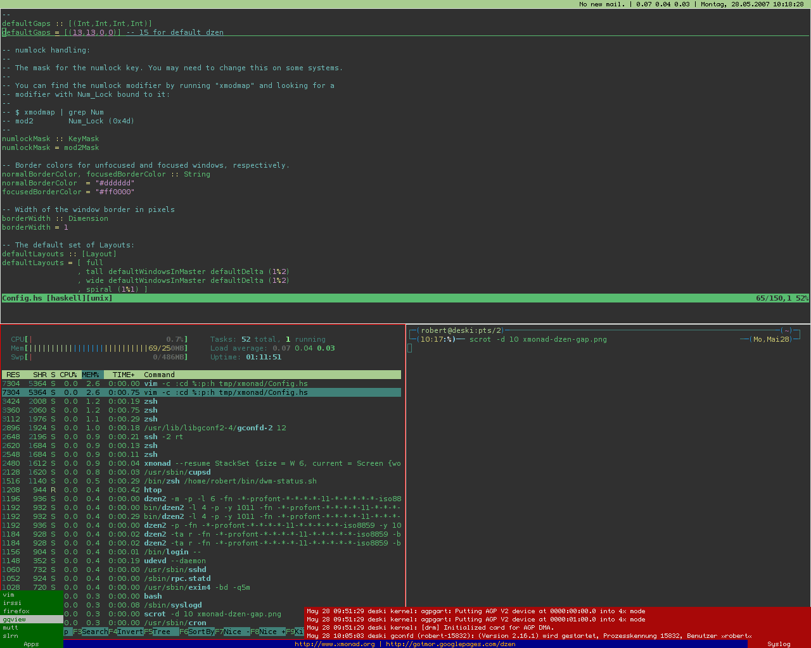
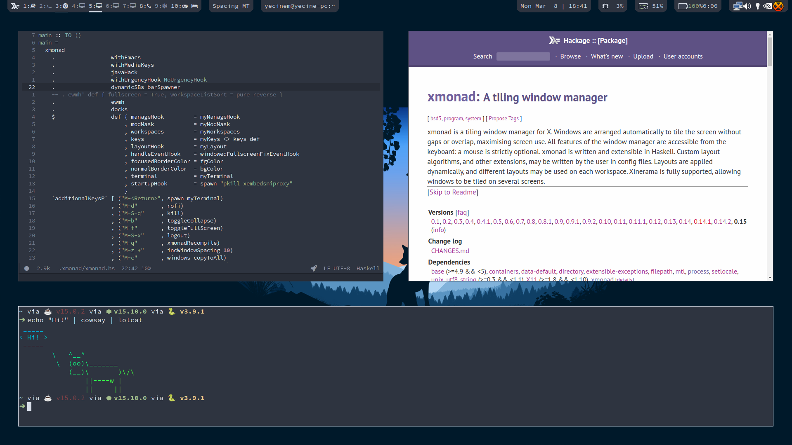
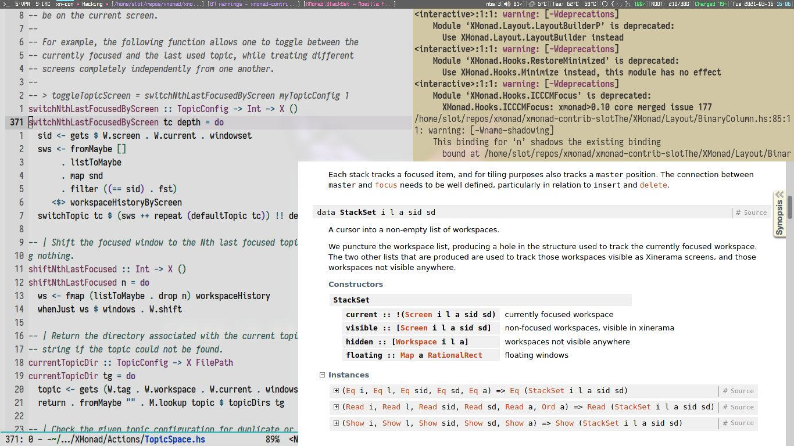
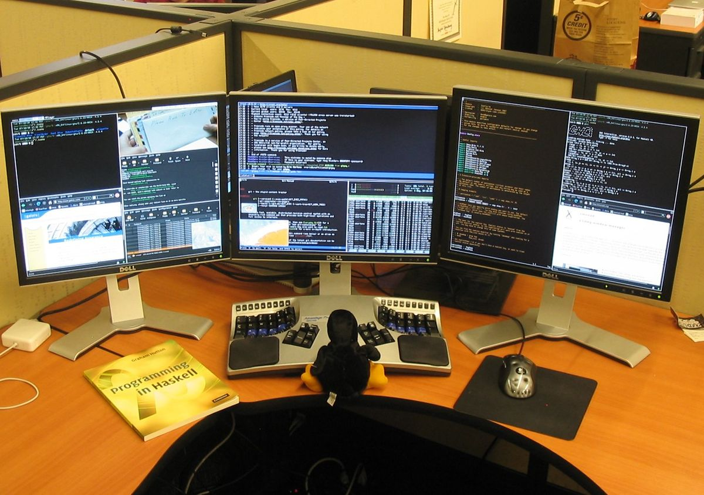
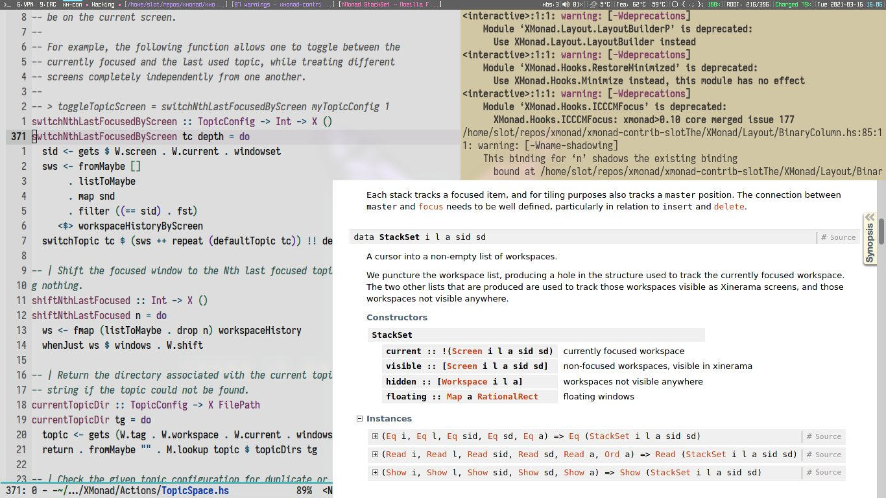
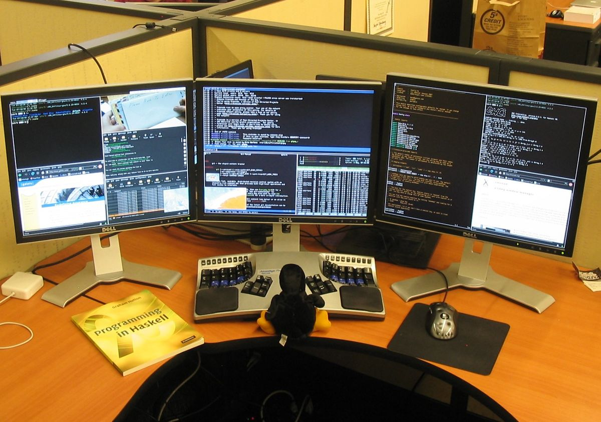

XMonad
A dynamically tiling X11 window manager that is written and configured in Haskell.
In a normal WM, you spend half your time aligning and searching for windows. XMonad makes work easier, by automating this.
Currently version 0.15



 


